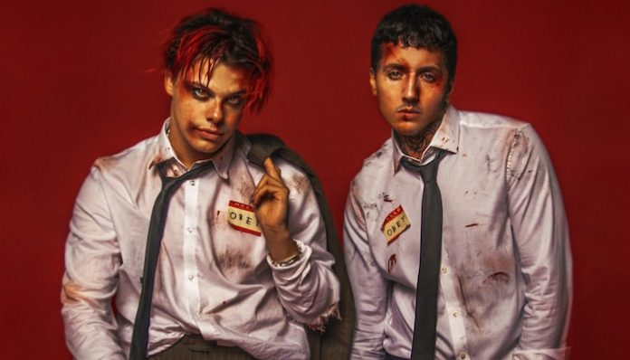
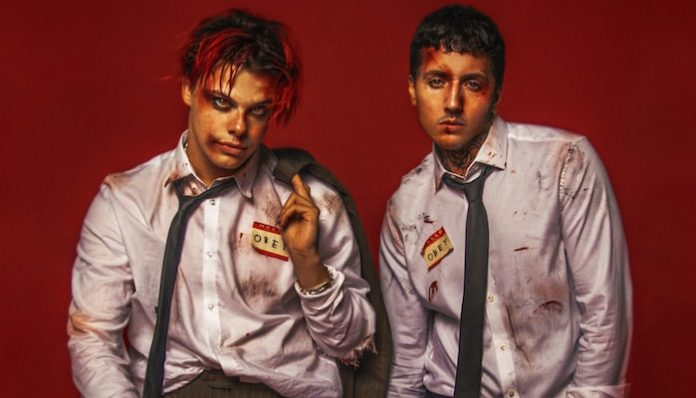

News
"It’s time for every Bring Me The Horizon fan to “repent, repent” because Suicide Season turns 12 years old today. The iconic album sleeve remains a staple on record shelves with the cover model literally spilling her guts."...
"Now, the artists are celebrating a major music milestone all thanks to the single. As well, they are offering a behind-the-scenes look into how the iconic “Obey” video was created. YUNGBLUD first teased the collaboration back in July when he sent a cryptic tweet to Oli Sykes and Jordan Fish. "...
"Last month, the hectic collab between the Brits landed in 'Obey' - a pounding, riotous track that rallies against the establishment, channelling quarantine-bred frustration into a three and a half minute banger."...

 
